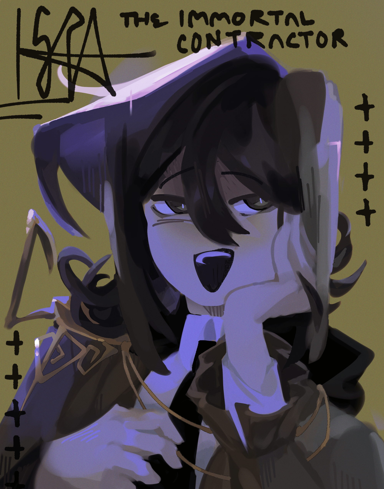

Isra HBD !!
creation date: april 7
character featured: isra
ok so i actually had a shittonna trouble drawing this one lol. this piece was made in early(?) april, i think around the time my laptop broke down? i was tryinta speedrun re-learning ibispaintx because mspaint was no longer an option. & i *wanted* to learn via what i believed would be a simple portrait. and uh.
simple portrait my ass???!??!?!?!
this took wayyy longer than it should have lol. as the title suggests, this was supposed to be done in time for Isra's b-day on the 25th, but instead i finished it a week after x-x (thats why the caption is currently "the immortal contractor" when it was originally gonna b like a happy birthday message : D)
i used to kinda hate this piece when i finished it (there were so many alt color variations cos i was so unsatisfied) but like.... looking at it now i think its mega cute. the rendering is nice for the most part (some bits of the hair are scuffed but what can u do) and the more desaturated/dim palette ended up pulling thru in the end :0
i think the inital frustration came from the fact i wasnt learning as quick as i wanted to. just from feeling it woulda been quicker in mspaint. when..... duh ofc its gonna take longer in ibis, its essentially a new program for me all over again x-x
tfw the pissass perfectionist's progress doesn't look like a linear graph